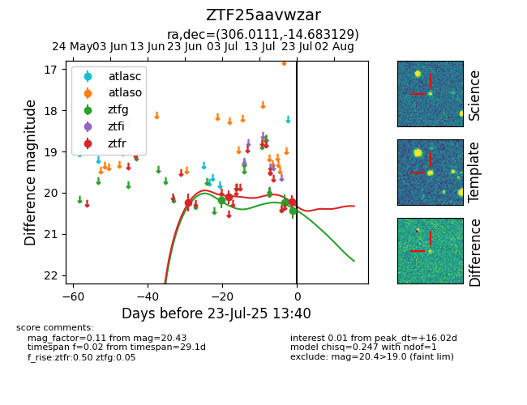

Target ZTF25aavwzar at 2025-07-23 13:40, see:
FINK: fink-portal.org/ZTF25aavwzar
Lasair: lasair-ztf.lsst.ac.uk/objects/ZTF25aavwzar
ALeRCE: alerce.online/object/ZTF25aavwzar
alt names
ZTF25aavwzar (ztf,fink)
coordinates:
equatorial (ra, dec) = (306.0111,-14.68313)
galactic (l, b) = (29.5754,-27.00477)
photometry
last ztfg=20.43, ztfr=20.22
3 ztfg, 3 ztfr detections
